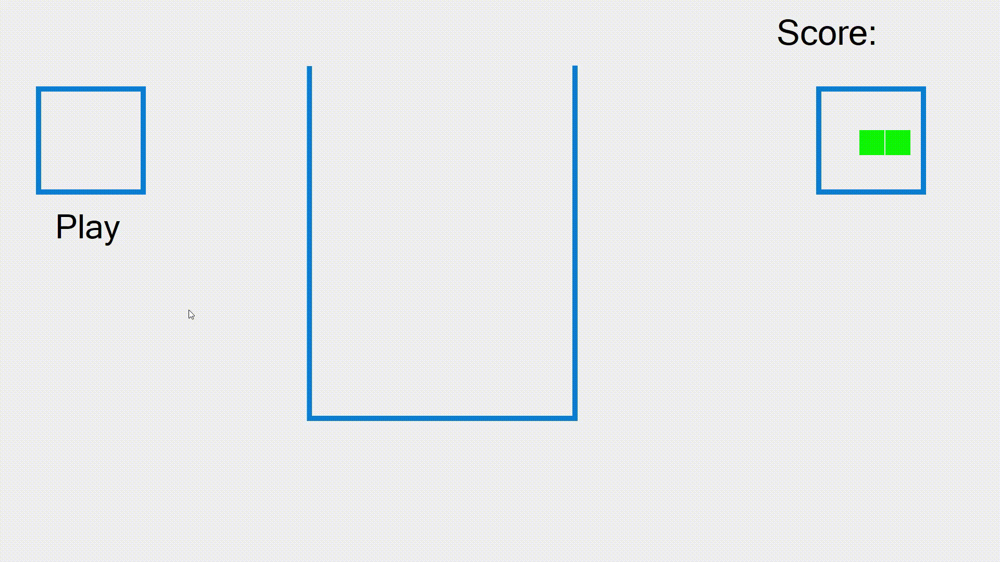
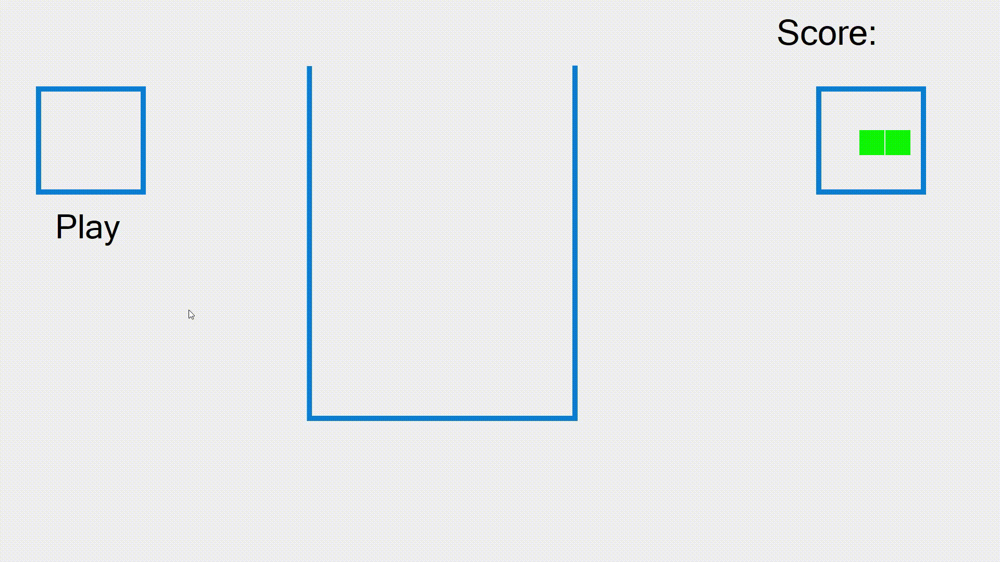
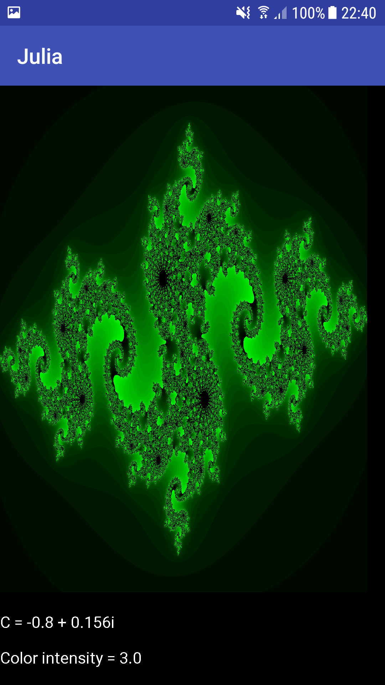
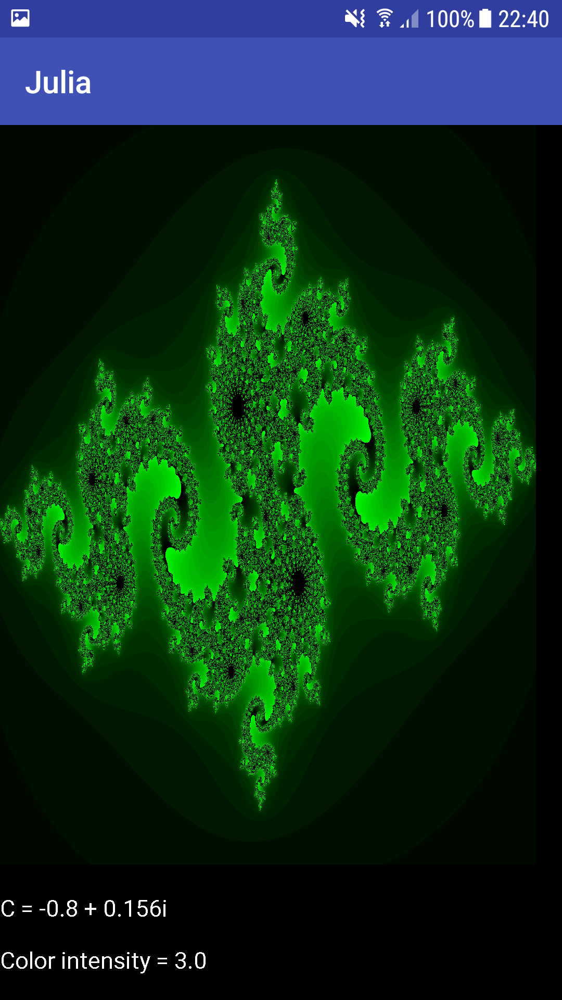

The game is a windows game loosely inspired by the popular google chrome dinosaur game that appears when you are unable to connect to a website.
The game is very simple, all you have to do is jump over or duck under objects. You can jump and duck with either the up-arrow or the down-arrow respectively or use the voice recognition and just say "jump" or "duck". Furthermore, if you do not like the color of your character, just yell out another color to change it's appearance.
Have you grown tired of playing tetris with all the predictable game pieces? Then try playing Tetris with random pieces, or Retris.
Every game piece consists of between 1-9 squares in a maximum of 3x3 formation. The pieces should then be dropped on the board so that a horisontal line gets filled with squares. If a line is filled with squares, then those squares will be removed and you will gain 1 point. Try if you can get more points than in the clip above.


This game is a version of the popular game Connect Four (or Four in a Row). The game consists of a 6 bricks high and 8 bricks wide board. The two players take turns putting a brick (green brick for player 1 and red brick for player 2) in the lowest available spot in any column. The game ends when a player has four consecutive bricks in a horisontal, vertical or diagonal row.
In this game you will play against the computer in a difficulty of your choosing. Will you take on the challenge to win against the computer on Hard?
This game is a version of the game chess but with a small twist, all the pieces are based on swedish people. The origin of chess isn't completely known but it has existed for approximately 2000 years. It is played with two players, one on each side of a 8x8 board. Each player starts with a total of 16 pieces where each piece have a different set of legal moves. If a player's piece lands on the opponent's piece, then the latter is removed from the board. The game ends when one person get's checkmate, meaning that the opponent's king is threatened and the opponent can't remove the threat.
In this game you will play against the computer in a difficulty of your choosing. Let the best king win!
 

Click on the GIF to see any of the 248 solutions to Kattis. The problems ranges anywhere from Hello World to finding the inverse factorial.
Julia is an application used to draw cool pictures based on the work of the mathematician Gaston Julia. All you have to do is choose a color, a complex number and a color intensity and click on the draw button to get your cool picture. If you don't have any imagination and can't come up with numbers, just press the randomize button to get a random picture.